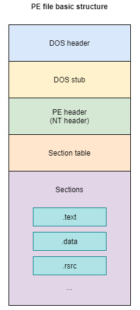
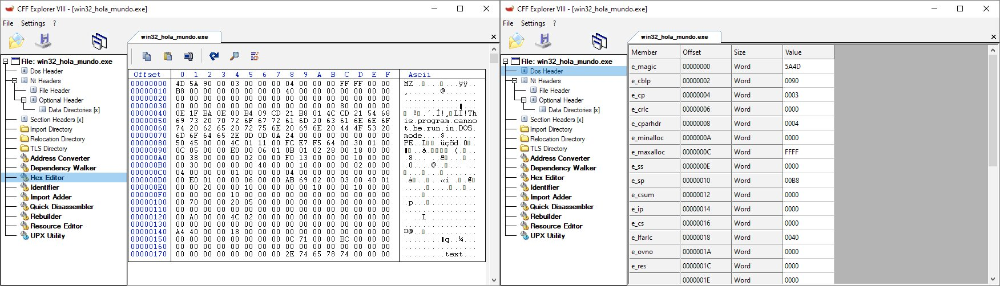
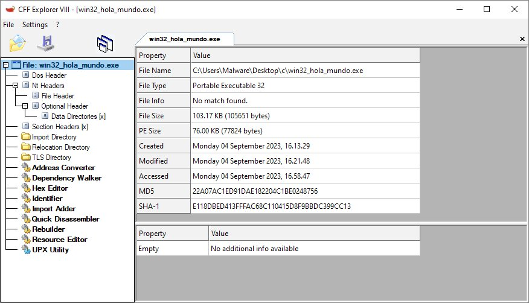
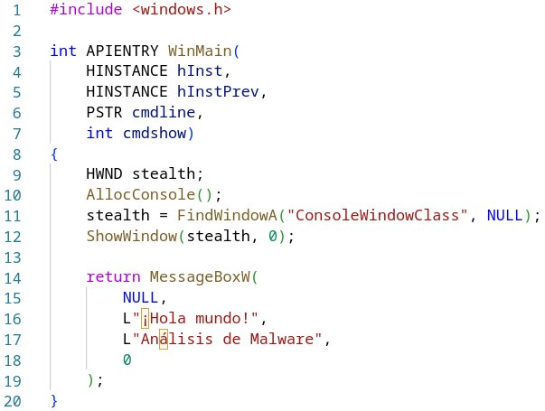
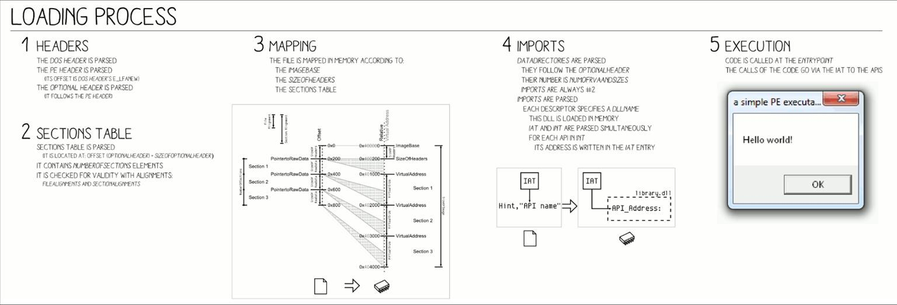
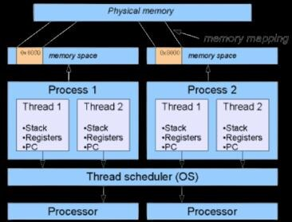

Fundamentos internos de Windows
Este último módulo cierra el bloque de conceptos teóricos explicando cómo está construido, por dentro, un ejecutable de Windows —el formato PE— y qué ocurre exactamente cuando el sistema operativo lo carga y lo pone en marcha como proceso. Son los mismos conceptos que sostienen técnicas de malware tan habituales como la inyección de código, la evasión de análisis o el anti-debugging.
1 El formato PE (Portable Executable)
PE (Portable Executable) es el formato de fichero que usan los ejecutables (.exe), las bibliotecas dinámicas (.dll) y los controladores (.sys) en Windows. Se llama "portable" porque la misma estructura general es válida tanto para binarios de 32 bits (PE32) como de 64 bits (PE32+). Conocer su estructura es imprescindible en análisis estático: es lo primero que examina cualquier herramienta de análisis de malware al abrir una muestra.

Un fichero PE se organiza, de principio a fin, en los siguientes bloques:
| Bloque | Contenido |
|---|---|
| DOS Header | Cabecera heredada de MS-DOS; su primer campo, e_magic, contiene la firma "MZ" que identifica el fichero como ejecutable |
| DOS Stub | Pequeño programa DOS que solo se ejecuta si el binario se lanza en un sistema sin soporte para PE, mostrando el mensaje "This program cannot be run in DOS mode" |
| NT Header (PE Header) | Firma "PE\0\0" seguida de la cabecera de fichero (File Header) y la cabecera opcional (Optional Header) |
| File Header | Datos generales: arquitectura de la máquina, número de secciones, fecha de compilación |
| Optional Header | Pese al nombre, es imprescindible: incluye el punto de entrada del programa, la dirección base preferida y las Data Directories |
| Data Directories | Tabla de punteros a estructuras clave: tabla de importaciones, de exportaciones, de recursos, etc. |
| Section Headers | Tabla que describe cada sección: nombre, tamaño, dirección virtual y permisos (lectura/escritura/ejecución) |
| Sections | El contenido real del fichero, repartido en las secciones descritas a continuación |

2 Las secciones de un PE
Cada sección agrupa un tipo de contenido concreto y declara sus propios permisos de memoria. Las más habituales son:
.text
Código ejecutable del programa. Permisos típicos: lectura y ejecución.
.data
Variables globales inicializadas. Permisos típicos: lectura y escritura.
.rdata
Datos de solo lectura, como cadenas de texto constantes.
.idata
Tabla de importaciones: qué funciones de qué DLL necesita el programa.
.edata
Tabla de exportaciones: qué funciones ofrece el binario a otros (típico en DLL).
.rsrc
Recursos: iconos, cuadros de diálogo, cadenas de idioma, versión del fichero.
3 Inspeccionando un PE con un editor de recursos
Herramientas como los editores de recursos PE permiten navegar visualmente toda la estructura descrita arriba —cabeceras, tabla de secciones, importaciones— sin necesidad de leer el fichero byte a byte, aunque también ofrecen un editor hexadecimal para cuando hace falta ese nivel de detalle.

Un ejemplo sencillo ayuda a fijar la relación entre el código fuente en C y el ejecutable PE resultante: un programa mínimo para Windows que crea (y oculta) una consola y muestra un cuadro de diálogo:

Nótese la llamada a ShowWindow(stealth, 0): oculta la ventana de consola justo después de crearla. Es un patrón inocente en este ejemplo educativo, pero es exactamente el mismo mecanismo de la API de Windows (crear una consola solo para ejecutar algo en ella y ocultarla de inmediato) que utiliza malware real para ejecutar comandos sin que la víctima vea ninguna ventana.
4 Cómo se carga un ejecutable PE
Cuando el sistema operativo lanza un ejecutable, sigue un proceso de carga en varias fases:

- Lectura de cabeceras: el cargador (loader) del sistema lee el DOS Header y el NT Header para validar el fichero y obtener sus datos generales.
- Reserva de memoria virtual: se reserva un bloque de memoria virtual para el proceso, idealmente en la dirección base preferida indicada en el Optional Header.
- Mapeo de secciones: cada sección (.text, .data, .rsrc...) se copia a la memoria reservada, en la posición y con los permisos definidos en la tabla de secciones.
- Resolución de importaciones: el cargador recorre la tabla de importaciones (.idata) y carga en memoria cada DLL necesaria, resolviendo la dirección real de cada función importada.
- Transferencia de control: por último, la ejecución salta a la dirección indicada como punto de entrada (entry point) en el Optional Header, y el programa empieza a ejecutarse.
5 Procesos, hilos, y las estructuras PEB y TEB
Un proceso es una instancia en ejecución de un programa: tiene su propio espacio de memoria virtual, sus propios manejadores (handles) a recursos del sistema y al menos un hilo (thread) de ejecución. Un hilo es la unidad mínima que el planificador del sistema operativo pone realmente a ejecutar en la CPU; un mismo proceso puede tener varios hilos ejecutándose de forma concurrente y compartiendo el mismo espacio de memoria.

Windows mantiene, para cada proceso y cada hilo, una estructura interna de control con información de estado que el propio sistema operativo (y ciertas API documentadas) puede consultar:
// PEB — Process Environment Block // una por cada proceso struct _PEB { BYTE BeingDebugged; PVOID ImageBaseAddress; PPEB_LDR_DATA Ldr; PRTL_USER_PROCESS_PARAMETERS ProcessParameters; ... };
// TEB — Thread Environment Block // una por cada hilo struct _TEB { NT_TIB NtTib; PVOID ProcessEnvironmentBlock; CLIENT_ID ClientId; PVOID ThreadLocalStoragePointer; ... };
- PEB (Process Environment Block): estructura única por proceso con información como la dirección base del ejecutable, la lista de módulos cargados y, de forma muy relevante para el análisis de malware, el campo BeingDebugged.
- TEB (Thread Environment Block): estructura por hilo con información de ese hilo concreto, incluyendo un puntero de vuelta al PEB del proceso al que pertenece.
6 Cómo encaja este bloque con el análisis de malware
Los tres módulos técnicos de este bloque forman una progresión: la arquitectura x86 del módulo 7 explica la máquina; el lenguaje ensamblador del módulo 8 explica cómo se programa esa máquina directamente; y este módulo explica cómo Windows empaqueta (formato PE) y pone en marcha (carga, procesos, hilos, PEB/TEB) el código que, al final, no es más que instrucciones en ensamblador ejecutándose sobre esa arquitectura. Es exactamente el conjunto de conocimientos que hace posible pasar del análisis de comportamiento del bloque 1 (qué hace el malware, qué objetivos persigue) al análisis técnico en profundidad de una muestra concreta.